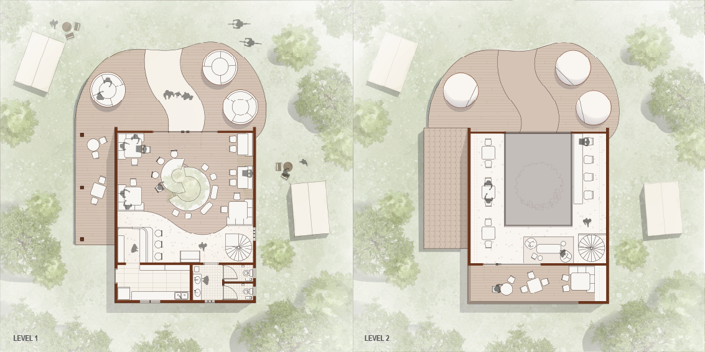
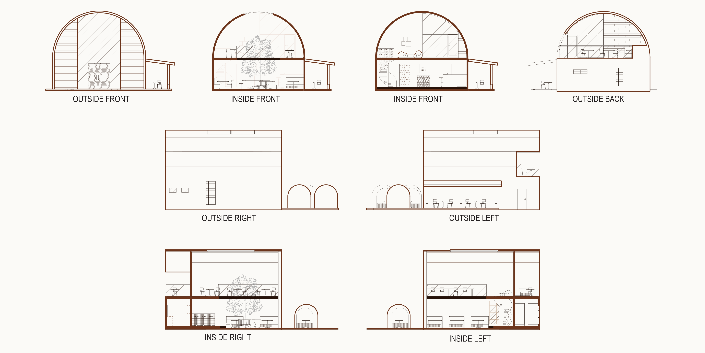

Self-Initiated Project
Grounds on the Ground
Project Description
Grounds on the Ground is a café concept situated within a camping ground in the forested landscape of Taman Langit Pangalengan. The project responds to families who wish to remain involved in outdoor activities while also requiring a comfortable space for working, resting, or gathering.
The café takes the form of a spilled coffee mug, translating the act of pouring coffee into an architectural gesture. Large openings bring natural light into the interior while framing views of the surrounding trees and landscape. Communal tables accommodate families and groups, reinforcing the café’s role as a shared space within the camping environment.
Through this project, I developed my understanding of spatial planning and practised producing floor plans, elevations, and sections across different levels and viewpoints.

Elevations & Sections
